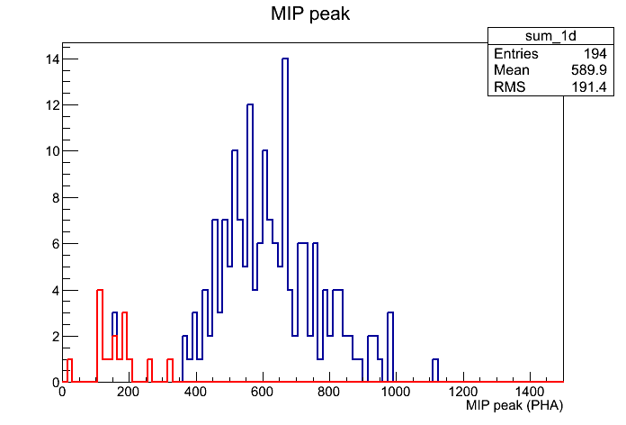
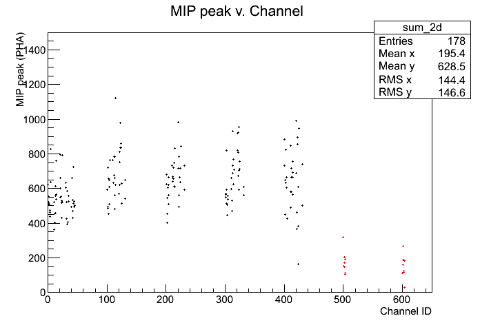
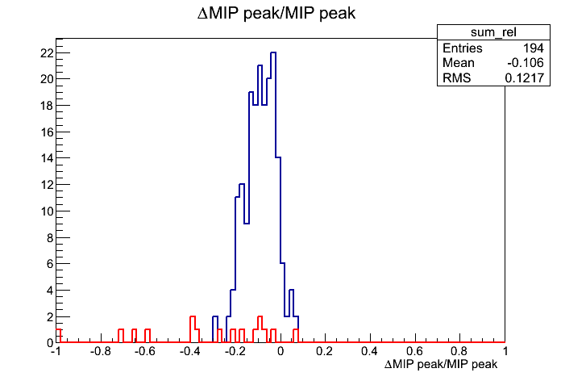
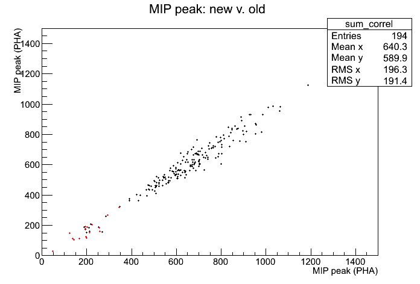

ACD_Gain Calibration r0729383941_gain
Input:
Files:
-
Type: Pedestal. Path: /sdf/group/fermi/ground/releases/monitor/ACD/FLIGHT/Ped/120910/r0368924812_ped.xml
- Type: Digi. Path: root://glast-rdr.slac.stanford.edu//glast/Data/Flight/Level1/LPA/prod/5.9/digi/r0729383941_v001_digi.root
- Type: Digi. Path: root://glast-rdr.slac.stanford.edu//glast/Data/Flight/Level1/LPA/prod/5.9/digi/r0729389629_v001_digi.root
- Type: Digi. Path: root://glast-rdr.slac.stanford.edu//glast/Data/Flight/Level1/LPA/prod/5.9/digi/r0729395318_v000_digi.root
- Type: Digi. Path: root://glast-rdr.slac.stanford.edu//glast/Data/Flight/Level1/LPA/prod/5.9/digi/r0729401006_v001_digi.root
- Type: Digi. Path: root://glast-rdr.slac.stanford.edu//glast/Data/Flight/Level1/LPA/prod/5.9/digi/r0729404665_v000_digi.root
- Type: . Path: root://glast-rdr.slac.stanford.edu//glast/Data/Flight/Level1/LPA/prod/5.9/recon/r0729383941_v000_recon.root
- Type: . Path: root://glast-rdr.slac.stanford.edu//glast/Data/Flight/Level1/LPA/prod/5.9/recon/r0729389629_v000_recon.root
- Type: . Path: root://glast-rdr.slac.stanford.edu//glast/Data/Flight/Level1/LPA/prod/5.9/recon/r0729395318_v000_recon.root
- Type: . Path: root://glast-rdr.slac.stanford.edu//glast/Data/Flight/Level1/LPA/prod/5.9/recon/r0729401006_v000_recon.root
- Type: . Path: root://glast-rdr.slac.stanford.edu//glast/Data/Flight/Level1/LPA/prod/5.9/recon/r0729404665_v000_recon.root
Time Span (MET seconds): 729383944.6773 - 729409455.0866
Triggers used: 2643280
Use History
- stored at Wed Jun 24 20:52:21 2026
Output:
Summary Plots


Plots with respect to reference calibration


Reference Calibration
/sdf/group/fermi/ground/releases/monitor/ACD/FLIGHT/ElecGain/081208/r0250381744_gain.xml
Files:
-
Type: Pedestal. Path: /afs/slac.stanford.edu/g/glast/ground/releases/monitor//ACD/FLIGHT/Ped/081208/r0250381744_ped.xml
- Type: Svac. Path: root://glast-rdr.slac.stanford.edu//glast/Data/Flight/Level1/LPA/prod/1.69/svac/r0250381744_v000_svac.root
- Type: Svac. Path: root://glast-rdr.slac.stanford.edu//glast/Data/Flight/Level1/LPA/prod/1.69/svac/r0250387900_v000_svac.root
- Type: Svac. Path: root://glast-rdr.slac.stanford.edu//glast/Data/Flight/Level1/LPA/prod/1.69/svac/r0250393965_v001_svac.root
- Type: Svac. Path: root://glast-rdr.slac.stanford.edu//glast/Data/Flight/Level1/LPA/prod/1.69/svac/r0250399977_v000_svac.root
- Type: Svac. Path: root://glast-rdr.slac.stanford.edu//glast/Data/Flight/Level1/LPA/prod/1.69/svac/r0250405966_v001_svac.root
Time Span (MET seconds): 250381746.9232 - 250410431.0866
Triggers used: 7462018
Comments
- Report made at 2026-06-25 02:08:38 UTC by user abhishek
- Data from Mission week 818